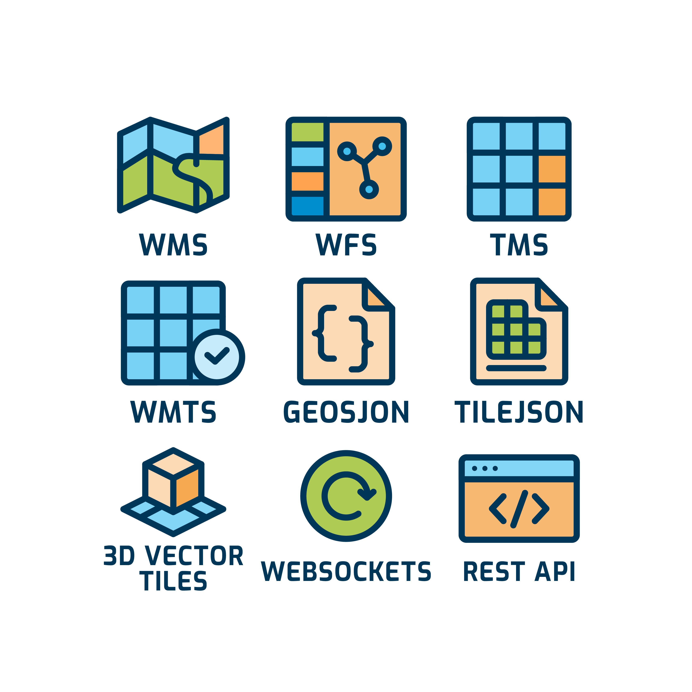

Bekijk vanuit alle hoeken
Schakel moeiteloos tussen 2D kaarten en 3D modellen binnen dezelfde omgeving. Perfect voor gebiedsontwikkeling, infrastructuurprojecten en impactvolle presentaties aan stakeholders.

Werk met kaarten als een pro, zonder de expertise.
Alle locatiedata op één plek. Van Excel tot landelijke databases. In 2D én 3D. Geen ingewikkelde GIS-software, gewoon aan de slag.

De kracht van professionele GIS-software, de eenvoud van een smartphone-app.
Veel organisaties hebben waardevolle locatiedata, maar deze blijft vaak verborgen in systemen. MapGallery maakt deze data toegankelijk voor iedereen in je organisatie - van beleidsmedewerker tot projectleider. Direct inzicht, zonder technische kennis.
Geen technische drempels. Geen ingewikkelde installaties. Gewoon inzicht.
Via één centrale zoekingang vinden gebruikers snel wat ze nodig hebben: locaties, percelen, kaartlagen en relevante details uit datasets. Zo wordt geo-informatie niet alleen vindbaar, maar ook direct bruikbaar in het werkproces.
MapGallery koppelt naadloos met bestaande systemen en databronnen. Je brengt al je locatiedata samen in één overzicht, zodat je minder tijd kwijt bent aan zoeken en meer tijd hebt voor analyse, afstemming en beslissingen.

MapGallery wordt gebruikt door uiteenlopende organisaties die geo-informatie helder willen inzetten in projecten, beheer en besluitvorming. Van overheid tot bouw en infra: de toepassing past zich aan aan jouw werkproces, niet andersom.
De ontwikkeling van MapGallery wordt mede gestuurd door feedback uit de praktijk. Daardoor groeit de oplossing mee met wat gebruikers écht nodig hebben — en blijft het prettig en eenvoudig in gebruik.
Van vergunningverlening tot gebiedsontwikkeling. Gemeente Haarlem deelt al haar geo-informatie via één platform.
Werkvoorbereiding, uitvoering en oplevering in één systeem. Bekijk hoe Gebroeders van 't Hek efficiënter werkt.
Ontdek de mogelijkheden →
Realtime inzicht in waterketen en prognoses. De Afvalwater Prognoseviewer van het Waterschapshuis maakt complexe data begrijpelijk.
Afvalwater Prognoseviewer →
Historische bouwtekeningen interactief toegankelijk. Het Westfries Archief ontsluist geschiedenis op de kaart.
Bekijk de historische bouwtekeningen →
Lees hoe MapGallery is ingezet voor de WoonZorgwijzer om zorg beter in kaart te brengen.
Lees hoe MapGallery is ingezet voor de Veiligheidsregio's om veiligheid beter in kaart te brengen.
Ontdek in 20 minuten hoe MapGallery jouw organisatie helpt